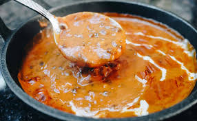

Dal Makhani

Dal Makhani is a rich, creamy and popular Punjabi dish made with slow-cooked black lentils (urad dal) and kidney beans (rajma), simmered with butter, cream and aromatic spices, creating a luscious, smoky-flavored delicacy best enjoyed with roti, paratha or rice. There are some dishes that represent Punjabi cuisine, like none other and Dal Makhani is one of them. This Dal Makhani Recipe is a restaurant style version with subtle smoky flavors and creaminess of the lentils. If you are a fan of North Indian food and those lovely Punjabi flavors in your food, then you are going to love this makhani dal even more.
Ingredients
- Lentils
- Cream
- Kasuri methi or dried fenugreek leaves
Steps
- Soaking lentils: Add 1 cup urad dal (200 grams Indian black lentils)& ¼ cup rajma (55 grams red kidney beans) to a large pot and rinsethoroughly a few times. Drain the water and pour 4 cups fresh water.Soak them overnight, uncovered. To speed up the soaking process youmay pour boiling water and soak for 4 hours.
- Cooking lentils: After they are soaked well, drain the water and pour4 cups fresh water. Pressure cook on a medium heat for 10 whistles. Ittakes about 35 to 40 mins. If using an Instant pot pressure cook for 20mins. If cooking in a pot add more water as required and cook until theybecome tender.
- Check if cooked well: When the pressure releases naturally, openthe lid and check if the dal is well cooked. Both rajma and urad dal haveto be softened. Press down a rajma and few urad dal in between yourthumb and fore finger. They should get mashed very well easily. Theyshould not be aldente or even slightly hard.
Home